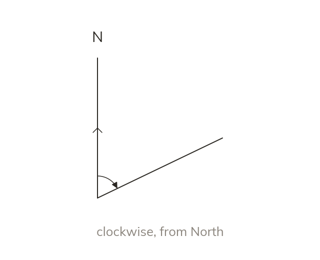

Definition
A bearing is an angle measured CLOCKWISE from North. It is always written with three figures: 045, not 45.
A bearing is an angle measured CLOCKWISE from North, at the point you are measuring from. It is always written with three figures, so 8° is written 008, and 45° is written 045.